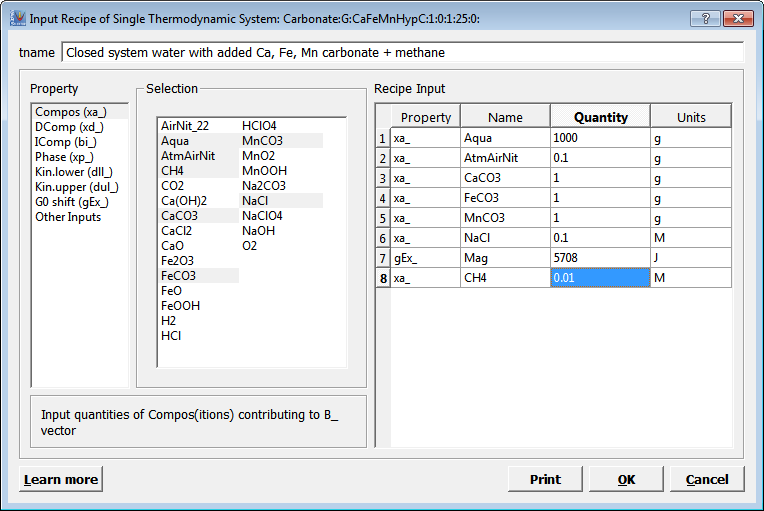
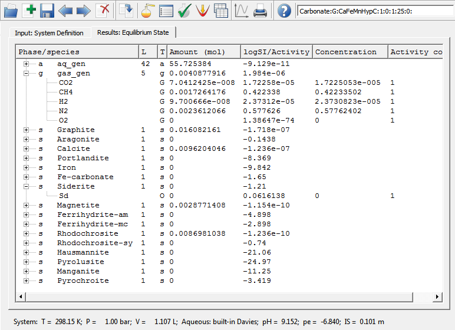

Previous Page Back to Start Page
(21) Let us now try how the GEMS code
performs "batch" model runs, or process simulations, where many
equilibrium states are generated from a regular change in T,P, bulk
composition, or other input
data.
First of all, a process simulation requires one "parent" chemical
system definition with calculated equilibrium state to be present in
the project database. Here, we will create a "parent" system by cloning
the previously calculated SysEq record for the closed carbonate system.
In the "Single
Thermodynamic System" dialog, select a Record -> New("Clone") menu
command, and change the old record key "Carbonate:G:CaFeMnHypC:1:0:1:25:0:" to a new one: "Carbonate:G:CaFeMnHypC:2:0:1:25:0:".
Press "Ok", change the
name
of the system and add 0.01 mol CH4 (methane), as shown
below.

Now, close the "System"
window, switch to the
"Single Thermodynamic System" dialog, and click on the "Calculate GEM
IPM"  toolbar button.
toolbar button.
Accept
the calculation results after the IPM module has converged. You should
see now something like that shown in a screenshot below (if you expand
some phases):

The presence of a stable
Graphite phase (0.016 mol) indicates that this system is completely
reduced. This is also evident from mainly methane-nitrogen composition
of the gas phase at rather high pH = 9.15, low fugacity of carbon
dioxide f CO2, and extremely low f
O2 = 1.4e-74.
Siderite is now
undersaturated, and iron is present mainly in Magnetite, at rather low
total dissolved FeAQ = 1.3e-7 molal. You can see this on the
EqIC page of EqDemo window accessible by clicking the "Detailed
results"  toolbar button, as shown below.
toolbar button, as shown below.

(22) This system seems to
be a nice start point for a stepwise addition of an oxidant (e.g. O2)
to the closed system.
The objective of performing such a titration with O2 is usually to see how changing redox conditions may influence the equilibrium phase assemblage, or solubilities of Ca, Fe, Mn, pH and Eh in the aqueous solution.
Before proceeding with
setup of the Process Simulator to perform the O2 titration,
we must know how much added O2 would be sufficient to
completely oxidize this system. Such an assessment can be done easily
by the "trial and error" method.
Just open again the Compos
page of System window, add 0.7 g O2 to the recipe there, and
re-calculate the equilibrium. You should see that Graphite and
Magnetite phases disappear, but Rhodochrosite is still there; this
means that the system is not yet
completely oxidized. Change the O2 addition to 1 g and
calculate
the equilibrium again; now, pyrolusite appears instead of
rhodochrosite,
and the system is completely oxidized.
So, it is sufficient to
add O2
to the bulk composition in 0.02 g steps up to 1 g, which will give us
51
simulation point.
One more consideration is
that Manganite or Hausmannite phases are more likely to precipitate
than Pyrolusite in natural waters; this means that we have to disable
the Pyrolusite phase. On the "Input: System Definition" tab of the
"Single Thermodynamic System" dialog, expand the "Pyrolusite" and enter
57080 (J/mol, or 10 pK units)
surplus in the respective cell in the "G0 corr." column. Recalculate
the
equilibrium and check that Manganite appears instead of
Pyrolusite.
Now, our parent system is
ready - do not forget to remove the "trial" O2 addition,
recalculate, and save the SysEq record.